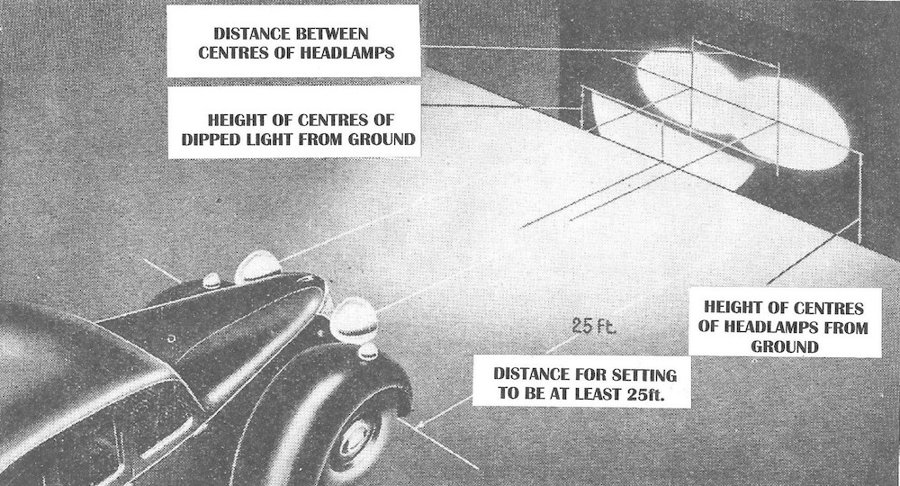

The following appeared in the October 2016 issue of Totally T-Type from Jonathan Goddard:
“Now that the UK MoT test is no longer required (for pre-1960 cars in the UK) owners are presented with a slight dilemma when wishing to ensure their vehicles are safe and roadworthy.
One option is to ask the local Garage to “MoT” the vehicle, and this is fine if the Garage in question still has the skills and equipment. The more modern Garage may be reluctant to take on this work, particularly if they are “unable” to plug in their automated vehicle analyser into the Controller Area Network {CAN} of the vehicle. CAN is the system of wiring and software protocols that provides the connectivity between the modern vehicle’s components and sensors, and without the appropriate (computer) analyser, life would be difficult for today’s engineer to fault find.
More traditional (non-franchised) garages are generally helpful and able to MoT the older vehicle.
The “Pre 1960 MoT Check List” is a useful guide to either carry out the work oneself or to “offer” to the “Traditional” Garage Engineer (Inspection Authority) for him to carry out the necessary checks and sign off the last page of the check list.
This, I believe, would also keep the Insurance Companies happy should they ever have to question the roadworthiness of the vehicle that no longer has to have an MoT.”
Check Box [√]
Sidelights Front sidelights should be white, and the rear, red. Bulbs should not be faded or dim. A broken lens is a failure unless it has received satisfactory repair.
Status [ ]
Headlights Switch between main and dipped to ensure bulbs turn on and off instantly and that the “colour” of each pair is the same. The brightness of pairs of bulbs should be the same, but distorted or weak beams due to broken lens, rusty reflectors or unaligned bulb filament would need to be rectified.
If you have a full beam dash light it must be working.
(Pre 1936 vehicles do not require headlamps.)
Status [ ]
Headlamp aim
With the beam shone on a wall the alignment and dipping action can be checked.

The beams need to be the same shape each side, not fuzzy and in conformant with the above diagram.
Status [ ]
Note. Headlamp directional adjustment is usually possible. Garages will use specialist equipment to align headlights.
Brake lights and reflectors
Where fitted, brake stop lights should come on fully and show no white light when the brake is applied, and go off when it is released.
Status [ ]
Rear reflectors should be red, unbroken and capable of reflecting i.e. clean!
Status [ ]
Direction Indicators
Indicators, where fitted, must flash between 60 and 120 times a minute. Cars first used after 1965 must have amber indicators. On those fitted before this date the fronts could be white and the rears red.
The direction indicator switch must work properly, as must the “tell-tale” internal light or audible signal. Self-cancelling is not part of the MoT.
Where semaphore arms are fitted they must work smoothly, show amber light and have a dash tell-tale indicator on the dash.
Status [ ]
Number plate lights
Check that rear number plate illuminating bulbs are working normally.
Status[ ]
Reflectors Where fitted make sure that they are clean and not broken or obscured.
Status [ ]
The Horn Ensure that the horn works reliably.
Status [ ]
General Electrics
All switches must be secure and wiring securely fastened and the battery must be secure.
Status [ ]
Suspension & Steering
Test the wheel for structural integrity by pushing and pulling both along the shaft axis and at right angles to it. The objective is to identify wear between the shaft and steering wheel, end float, wheel not properly attached or bearings worn. Finally rotate the wheel both ways to check steering column couplings and clamps.
Note. This test should be conducted with both front wheels jacked up to avoid overstressing components.
Status [ ]
Steering Mechanism
Check for play in the steering box or rack and pinion by waggling the steering wheel from side to side until the front wheels just move. Up to 13mm of free play at the steering wheel is permitted for rack and pinion systems and up to 75mm if a steering box is fitted.
Status [ ]
The rest of the steering mechanism is checked by turning the wheel one way and then the other until there is no resistance. (Front chassis jacked up so wheels are clear of the ground.) The steering rack mechanism must not be loose on its mountings and these should be checked for cracks. Also check for wear in all the steering swivel joints. Check that all the locking devices are in place such as split pins and locking nuts. Make sure that there are no splits or tears in steering gaiters.
Status [ ]
Finally examine the surrounding chassis areas and make sure there is no corrosion, distortion or cracking in the structure within 30cm of any steering mechanism attachment points.
Status [ ]
Front and Rear Suspension
All the joints and the suspension arms as well as the suspension swivel joints must be checked for wear. The vehicle must be jacked up to relieve the load off the steering and suspension swivel joints so they can be properly examined.
Check the springs to make sure they are not fatigued or broken.
Status [ ]
Shock absorbers must be securely attached, leak free and the bushes inspected. Bounce the car up and down to see that the dampers are working properly.
Status [ ]
Check that all split pins and locking nuts are where they should be.
Status [ ]
While the wheels are off the ground, the wheel bearings can be inspected for excessive wear.
Status [ ]
Where fitted, anti-roll bars must be secure and the bushes acceptable.
Status [ ]
Brakes Garages will use specialised equipment to fully check the brakes but much can be done without such equipment.
Inside the car, see that the footbrake is firm and does not depress nearly to the “floor”. (With power-assisted brakes, the servo must be working).
Status [ ]
Operate the handbrake to see if the ratchet works and releases properly. Check the handbrake mounting for cracks or corrosion.
Status [ ]
Examine the brake master cylinder for leaks and ensure that it is correctly full of clean fluid. Check pipes and unions for condition and leaks. Beneath the car, check all the flexible brake hoses for condition and make sure they are not chafed with the front wheels on full lock. Also examine all the metal pipes and unions for leaks and corrosion, together with any compensating valves, if fitted.
Status [ ]
Drum brake back plates should be checked for signs of fluid leakage from the wheel cylinders inside. With an assistant operating the hand brake, have a look at the cables and mechanism to check that it is all working properly and none of the levers or cables are seized.
Status [ ]
Brake performance can best be checked (without professional garage equipment) by driving on a deserted road (check the road ahead and behind as a safety measure first!) at about 20mph, gradually apply the footbrake and check that the car does not veer one way or the other, that there is no brake squeal or “rumble” from the pedal.
Status [ ]
Carry out the same procedure as above with the handbrake.
Status [ ]
Exhaust Systems
From under the car, check the exhaust system. It must be securely fitted from the engine exhaust manifold down to the final mounting at the tail pipe. With the engine running, check for leaks throughout the system. Also, make sure that it is not too noisy. Emission tests do not apply to pre-August 1975 vehicles.
Status [ ]
Structural Security and Corrosion
The MoT test can fail a car as a result of corrosion in two ways. First, if structural areas of the vehicle are damaged, distorted or corroded so as to weaken them and, secondly, if the structure is damaged, corroded or distorted within 30cm of a brake, suspension or steering component.
Structural areas of the car are specifically prescribed in “The MoT Inspection Manual” and can best be summarised as follows.
Excessive corrosion is checked by squeezing the suspect metal or component between the finger and thumb to see if it “gives” or crumbles. If so, then it must fail. Light tapping or scraping with a special tool, which is, in effect, a small “toffee” hammer, is acceptable to detect corrosion. If light tapping penetrates the surface, or scraping reveals underlying corrosion which has weakened the structure, a failure results.
Repairs have to be welded and carried out in a special way dependent on the nature of the structure being repaired. This is laid out in the Manual. Highly-stressed components (a suspension arm for example), generally cannot be repaired by welding and will have to be replaced.
Status [ ]
Tyres and Wheels
Tyres should be examined for perishing, splits and bulges. Tyres fitted to any one axle must be the same type and size. Mixing tyres on one axle is not allowed. If cross ply or bias-belted tyres are fitted to the front, then a failure results if radial ply tyres are fitted to the rear. A failure also results if cross plies are fitted to the front, and bias-belted tyres to the rear.
Minimum tread depth is 1.6mm across central three quarters of tread. Cuts must not expose the tyre’s cords.
Status [ ]
Cautionary Note. MoT standards change with time and this could affect the “Check List”.
Note. In a recent survey, Insurance companies confirm that pre-1960 vehicles, whilst not requiring an MoT test certificate, must be legally roadworthy. Failure to maintain the vehicle with corresponding proof that the vehicle is roadworthy could result in the Insurance Company declining to pay out should a claim be made.
Garage Official Confirmation that the above MoT test Check List has been carried out in accordance with required standards.
Inspection Authority.
Signature of Issuer ———————————–
Return to Notebook
© David James 2016 Last updated: 4th October 2016